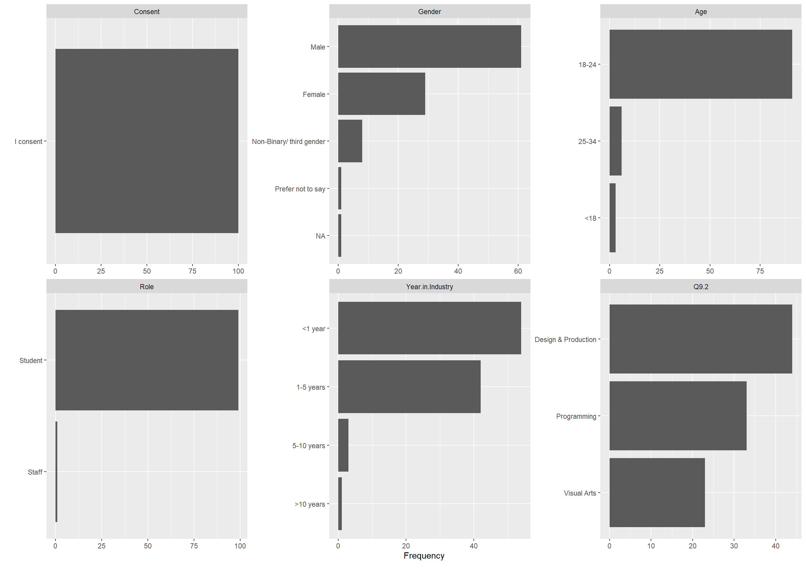

📘 Year 1
SDG Poster – Data Visualization with R
📗 Year 2
Analytics Translator – Acceptance of AI in the Games Industry
Survey-based research on how different subdomains in game development perceive AI. Includes ANOVA & Tukey HSD results. Created in Overleaf as first formal research paper.
